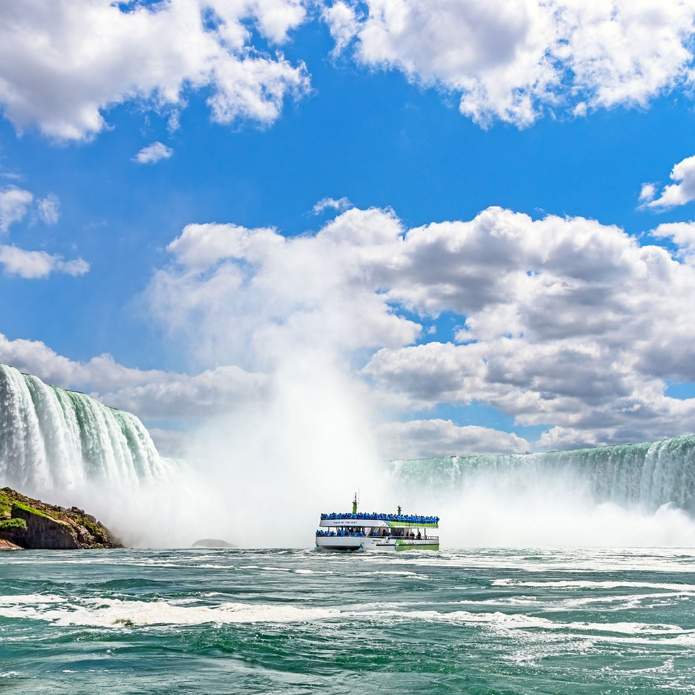
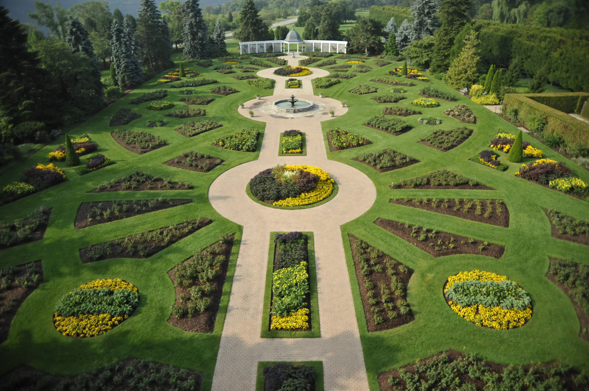
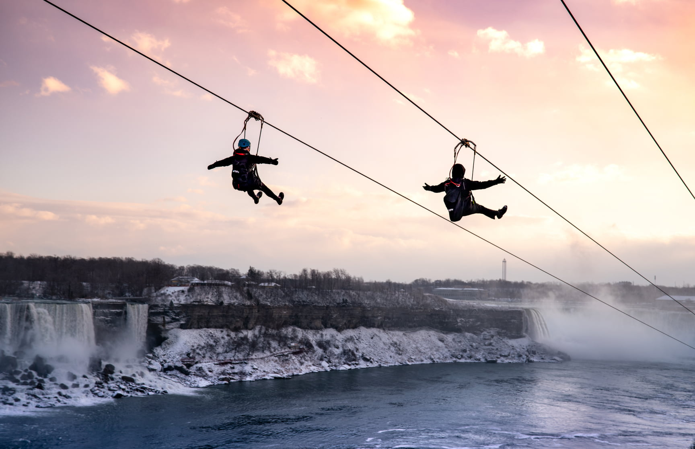
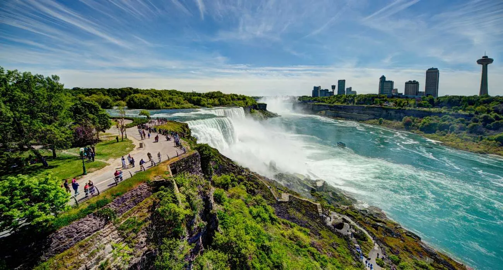
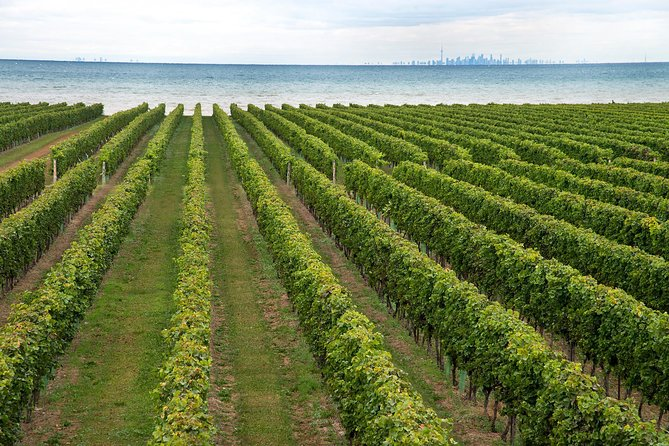
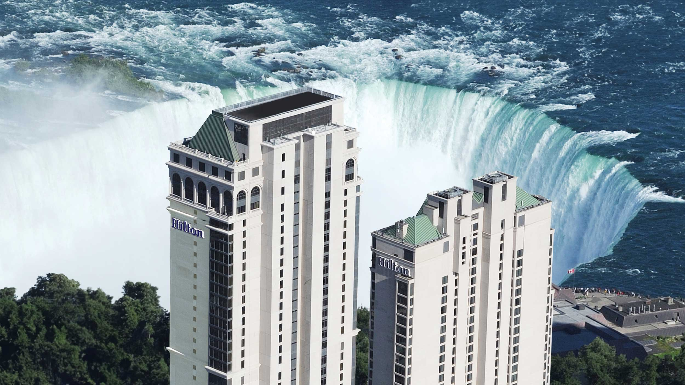

Exploring the Majestic Niagara Falls
Niagara Falls, one of the most famous natural wonders in the world, straddles the border between the United States and Canada. This breathtaking spectacle comprises three waterfalls: the American Falls, the Bridal Veil Falls, and the largest, the Horseshoe Falls. Together, they create a mesmerizing and powerful display of nature's beauty and strength.
A Brief History
The formation of Niagara Falls began more than 12,000 years ago during the last Ice Age. As glaciers receded, the water from the Great Lakes carved out a path through the Niagara Escarpment, creating the falls. Over the centuries, the falls have shifted and changed, but their grandeur has remained a constant source of wonder and inspiration.
Top Attractions at Niagara Falls
Horseshoe Falls: The largest of the three waterfalls, Horseshoe Falls is located on the Canadian side and offers stunning views and powerful water flows.
Maid of the Mist: This iconic boat tour takes you up close to the base of the falls, where you can feel the mist and hear the roar of the water.

Journey Behind the Falls: Experience the falls from a different perspective by exploring tunnels that lead you to observation decks behind the cascading water.
Niagara Parks Botanical Gardens: Located on the Canadian side, these gardens offer a peaceful retreat with beautiful flora and the Butterfly Conservatory.

Cave of the Winds: On the American side, this attraction lets you walk on wooden platforms right up to the Bridal Veil Falls, offering an exhilarating experience.
Adventure Activities
For thrill-seekers, Niagara Falls offers a variety of exciting activities:
Whirlpool Jet Boat Tours: Take a high-speed ride through the Niagara River's rapids for an adrenaline-pumping adventure.
Zipline to the Falls: Soar high above the gorge and experience stunning aerial views of the falls.

Helicopter Tours: Get a bird's-eye view of Niagara Falls and the surrounding area with a helicopter ride.
Hiking Trails: Explore the natural beauty of the region by hiking along the Niagara Gorge Trail or the Niagara Glen Nature Reserve.

Experiencing Local Culture
In addition to its natural beauty, the Niagara Falls region offers rich cultural experiences. Don't miss out on the following:
Niagara Falls Illumination: Every evening, the falls are lit up in vibrant colors, creating a magical and romantic atmosphere.
Niagara Wine Region: Visit local wineries and sample some of the region's best wines, particularly the renowned ice wine.

Clifton Hill: Known as the "Street of Fun," Clifton Hill offers a variety of attractions, restaurants, and entertainment options.
Old Fort Niagara: Step back in time and explore this historic site, which played a significant role in various military conflicts.
Planning Your Visit
When planning your trip to Niagara Falls, consider the following tips:
Best Time to Visit: The falls are spectacular year-round, but the best time to visit is during the late spring to early fall when the weather is pleasant and all attractions are open.
Accommodation: There are numerous hotels and lodges on both sides of the border, ranging from budget-friendly options to luxury resorts with stunning views of the falls.

Transportation: Both the American and Canadian sides are well-connected by road and public transportation. If you're flying in, the nearest major airports are Buffalo Niagara International Airport (USA) and Toronto Pearson International Airport (Canada).
Conclusion
Niagara Falls is a destination that offers something for everyone, from natural beauty and thrilling adventures to cultural experiences and relaxation. Whether you're planning a family vacation, a romantic getaway, or an adventure trip, Niagara Falls will leave you with unforgettable memories. So pack your bags, bring your camera, and get ready to experience the majesty of Niagara Falls!